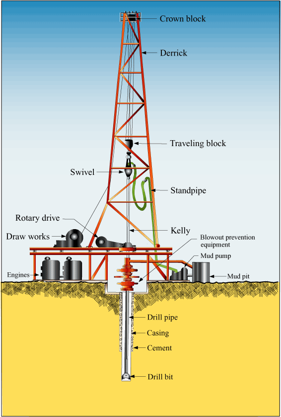
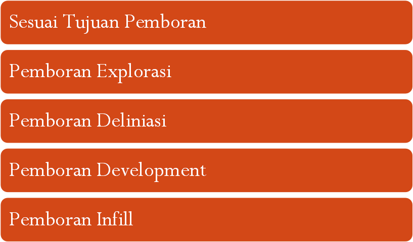
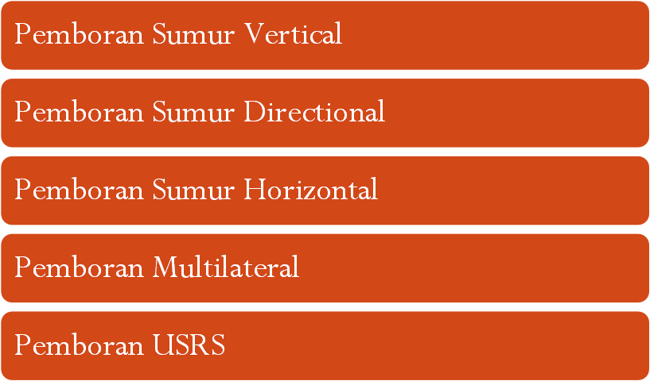
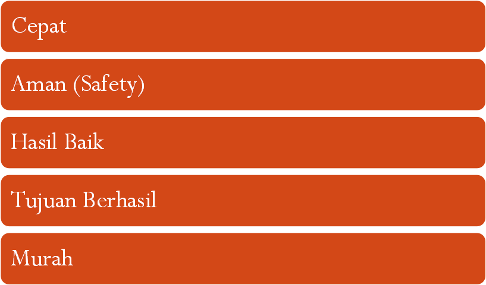

Materi Minggu Ini
- Ruang lingkup dan sejarah singkat rotary drilling unit modern
- Tujuan pemboran: eksplorasi, deliniasi, dan pengembangan (development)
- Jenis-jenis pemboran berdasarkan profil sumur: vertical, directional, horizontal
- Prinsip dasar operasi pemboran dan tahapan umum sebuah proyek sumur
Penjelasan Materi
Tujuan Pemboran
Operasi pemboran sistem putar (rotary drilling) modern memiliki fungsi utama membuat lubang secara aman hingga menembus formasi yang berpotensi mengandung minyak dan/atau gas. Lubang bor (well bore) yang telah dijaga kestabilannya dengan casing menghubungkan formasi potensial tersebut dengan permukaan, sehingga minyak dan/atau gas dapat diproduksikan.
Jenis Pemboran
Pemboran dibedakan berdasarkan tujuannya (eksplorasi, deliniasi, pengembangan/development) maupun berdasarkan tipe dan profil sumur yang dihasilkan — vertical, directional (berarah), dan horizontal. Pemilihan jenis pemboran disesuaikan dengan target formasi, kondisi geologi bawah permukaan, dan strategi pengembangan lapangan.
Prinsip Pemboran
Operasi pemboran diselesaikan menggunakan kompleks peralatan pemboran (rig) yang canggih. Rig pemboran putar modern terdiri dari lima komponen utama:
- Sistem angkat (hoisting system)
- Sistem putar (rotary system)
- Sistem sirkulasi (circulating system)
- Sistem tenaga (power system)
- Sistem pencegah semburan liar (blowout preventer / BOP system)
Kelima sistem ini bekerja terintegrasi untuk menjamin proses pemboran berjalan aman, efisien, dan terkendali dari permukaan hingga kedalaman target.
Gambar & Ilustrasi
Diambil langsung dari slide PPT Chapter 1.



